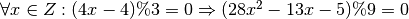
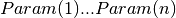
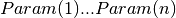
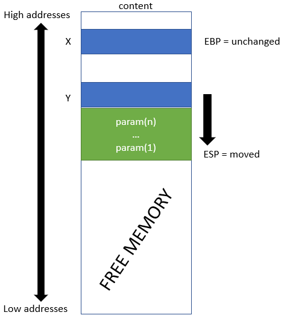
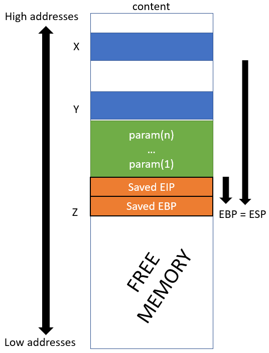
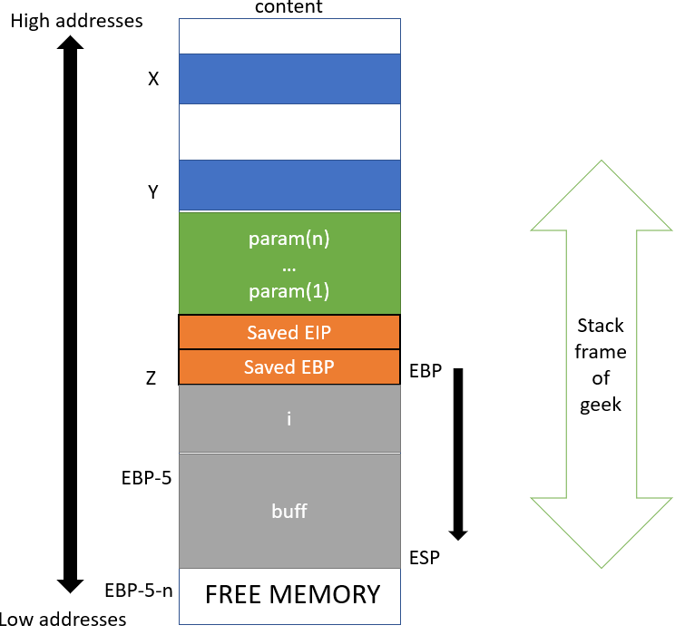

Assembly/Debugger¶
Assembly¶
INTEL for X86 based processors (mostly linux and windows)
<OPERATION> <DST>, <SRC>AT&T for UNIX
<OPERATION> %<SRC>, %<DST>
X86 assembly language¶
Several types of instructions :
Transfer between memory/registers and registers/memory
MOV [EBP+9],value: putsvalueat address pointed byEBP+9LEA EAX, [EBP+9]: load the address ofEBP+9intoEAXPUSH value: add value on top of stackPOP dst: remove top value from stack and save it in dest
Computation (
ADD,NEGL,…)Jump (
JUMP,JGE,…) and Test (TestCMPand corresponding flags)cmp source, dest #Implements jge flag #jump to flag if dest > source
Many more
NOP: does nothing, equivalent to0x90
Endianness convention: Use the little endian convention
- Address
0xffcefadeis represented with\xde\xfa\xce\xff
Debugger - disassembler - decompiler¶
- A debugger allow the user to view and change the running state of a program, many debuggers offer disassembling options. Situation is simplified if source code is available (type of variables). GDB is a good illustration.
- A disassembler is a software tool which transforms machine code into a human readable mnemonic representation called assembly language. Disassembling is undecidable: Given an address add , is there an input of the program that leads to add ?
- A decompiler is a software used to revert the process of compilation. It takes a binary program file as input and output the same program expressed in a structured higher level language.
Algorithms to disassamble¶
Linear sweep
- Read instruction one by one
- Does not take jump/test into account
- Purely linear, list based
- Very sensitive to dead code
- GDB works like that
Dead code problem (code overlapping allows to many instruction to be coded on common addresses) and linear mode [1] :
#True code: jmp next db 0a 05; next: cmp ecx, 0x2 je 0x8048069 mov ebx, 0x2;
#=> Objdump obtained after disassembling compiled true code: #=> Opcode overlaping due to dead code! Done by compression usually jmp 0x8048064 or al, [0x7402f983] add [ebx+0x2], bh
Recursive sweep
- Read instructions one by one
- Follows results from jumps
- IDA works recursively
Recursive mode may be problematic:One may think that recursive disassembling removes dead code problem but this is actually wrong. Indeed, a comparison (and so a jump) may depend on some software input, the value is not known in advance but disassembling is a very static procedure. Consequently, one has to check for all the values, and there is no guarantee that a part of the comparison does not contain dead code.
if(true) { //always here, fast with linear //i1 //i2 } else { //Deadcode, recursive do more work since lead to all jmp. }
Auto modified code: Technique allowing to programs to hide their payload and to not reveal them until the execution.
This program starts by allowing write access to the
.textcode section: the access rights of this section becomeRWX(read, write and execute are allowed). Then it sets a memory address,0x8048076ineax, then instruction 2 written toeax + 1, causing instruction 4 to be modified tomov edi, 2, coded onbf 02 00 00. Then instruction 3 causes a second auto-modification by transforming instruction 5 intomov ebx, 2, coded onbb 02 00 00. If the self-modifying instructions are not taken into account the displayed final value ofediandebxis 1. However, instructions 2 and 3 modify the code so that the final value of these two registers is 2 at the time of their display. Here you can see that the program changes during its execution and therefore it is not can’t be satisfied with the original representation of the program to analyze it.
{kind=link}
Other challenges in disassembling¶
- Opaque predicates: replace simple conditions with complex polynomials and extra variables. Hard to decode, hard to disassemble (dead code, etc)Static opaque predicate Is is a predicate whose value is fixed during runtime
- Invariant opaque predicate : The value is always evaluates to true or false for all possible inputsE.g :
- Contextual opaque predicate: Evaluates to always true or false under a given preconditionE.g : 
Dynamic opaque predicate: Split executions with several predicates that are either all true or all false. Here must pass to 1.2.3.
{kind=link}
- Virtualization: Hide the instructions as data of a new program (disorganisation of the structure).
Debuggers principles¶
gdb, radar,
ida , olydbg , objdump, ptrace … Their usage depend on the
type of files (elf,pe,…) and on functionality. [2]GDB debugger¶
- Compilation with debugging symbols (
-g):gcc -m32 -g fichier.c -o result - Launch gdb and avoid verbose messages:
gdb -q result
Main function: observe software at runtime
Key tool: break points and break line which are used to suspend the execution
break *addressbreak linebreak line condition
disass func: shows the assembly codei r registershows the content of registerprint $registershows the content of the address stored in register
x/value1xvalue2 address: hexadecimal representation ofvalue1units of sizevalue2starting fromaddressx/2xw ®ister: shows the two first words (sequence of byte depend on architecture) from address pointed by registerGDB can be used to modify register/environment variables/address’s content at runtime
set $ebp+=4set (i = 20)
watch i: Alarm can be issuedattach 335: Running process can be examinedlist func: Source code of function func can be obtained
GDB does not provide heap examination but you can install GDB heap. [3] This will give you addresses of chunks lists but this is much less flexible than stack/register explorations.
Stack organization¶
The stack (LIFO politics):
- Stores local variables and arguments of a function
- Pushes/pops information from high to low level addresses
- Is used to store the context a function on a stack frame
- On the right, an abstraction of the stack at execution
Relation between function and stack¶
EBP register and the top
of stack is accessed via ESP register. Stack manipulates words, that is 4 bytes values
and all pop and push operation are done on the top of the stack.{kind=link}
Calling function convention¶
A function is thus composed of a prolog and an epilog :
- Prolog consists in adapting the stack to access function’s parameters and local variables
- Epilog consists in cleaning this frame
Calling function convention
Before the function is called: push the argument
sub esp,size: make space for argumentadd ebx,valuepush address
When the function is called:
call funcpush eip: save EIP of calling framejmp functionAddress
At the beginning of function:
push ebp: save EBP of calling framemov ebp,esp: new EBP is current ESP- push local arguments:Arguments are pushed on the stack (usually from right to left)
When the function terminate:
leave: move the value of ESP to EBP and POP EBP , which restores old EBPretpop eip: and call which establishes the next instruction to be
At termination, the stack frame is erased
Example¶
Consider a call to a function Geek:
- With
 arguments: 
arguments:  - A local integer variable (4 bytes)
- A buffer of char buf ( bytes)

|

|

|
{kind=link}
{kind=link}
{kind=link}
//Before the call
0x0000053e <+0>: lea ecx,[esp+0x4]
0x00000542 <+4>: and esp,0xfffffff0
0x00000545 <+7>: push DWORD PTR [ecx-0x4]
0x00000548 <+10>: push ebp
0x00000549 <+11>: mov ebp,esp
0x0000054b <+13>: push ebx
0x0000054c <+14>: push ecx
0x0000054d <+15>: sub esp,0x10
0x00000550 <+18>: call 0x420
<__x86.get_pc_thunk.bx>
0x00000555 <+23>: add ebx,0x1a83
0x0000055b <+29>: push 0x5 //Push parameters
0x0000055d <+31>: call 0x51d <func> //Call func; includes push EIP
//Entering func
0x0000051d <+0>: push ebp //Save EBP
0x0000051e <+1>: mov ebp,esp //New EBP is current ESP
0x00000520 <+3>: sub esp,0x10 //Prepare space for local variables (space depends on the compiler (alignment))
//Exit func
0x0000053c <+31>: leave //equivalent to MOV ESP, EBP; POP EBP (now EBP point to the other stack frame)
0x0000053d <+32>: ret //equivalent to POP EIP
| [1] | http://docnum.univ-lorraine.fr/public/DDOC_T_2015_0011_THIERRY.pdf |
| [2] | https://beta.hackndo.com/introduction-a-gdb/ |
| [3] | https://github.com/rogerhu/gdb-heap |